Patatas a la importancia

Versión editada para cocinar. Lo que ella escribió, palabra por palabra, está en «Cuaderno».
Ingredientes
Preparación
- Pelar las patatas y cortarlas en redondo, un poco gordas. Añadir la sal.
- Pasarlas por la harina. Batir el huevo.
- Poner la sartén con el aceite. Cuando esté caliente, pasar las patatas por el huevo y freírlas hasta que se doren.
- Sacarlas a una cazuela, bien colocadas.
- Machacar el ajo y el perejil.
- En el aceite de freírlas, poner la cebolla picada y refreírla. Luego agregarle una cucharadita pequeña de harina y que se refría.
- Agregar el ajo y el perejil con 650 ml de agua, una hoja de laurel y una pastilla de Starlux.
- Cuando empiece a hervir, se echa a la cazuela y que cuezan por lo menos media hora.
Notas de mamá
Pincharlas con un tenedor para ver si están cocidas (nota al margen; lectura confirmada por Raul).
Avisos y dudas
- El agua y el laurel no están en la lista de ingredientes; solo aparecen en los pasos. La unidad del agua no está escrita; Raul fija 650 ml.
- «hasta que se doren» en el paso 3 lo he puesto yo; el original dice «freir que se dore».
Tal como lo escribió
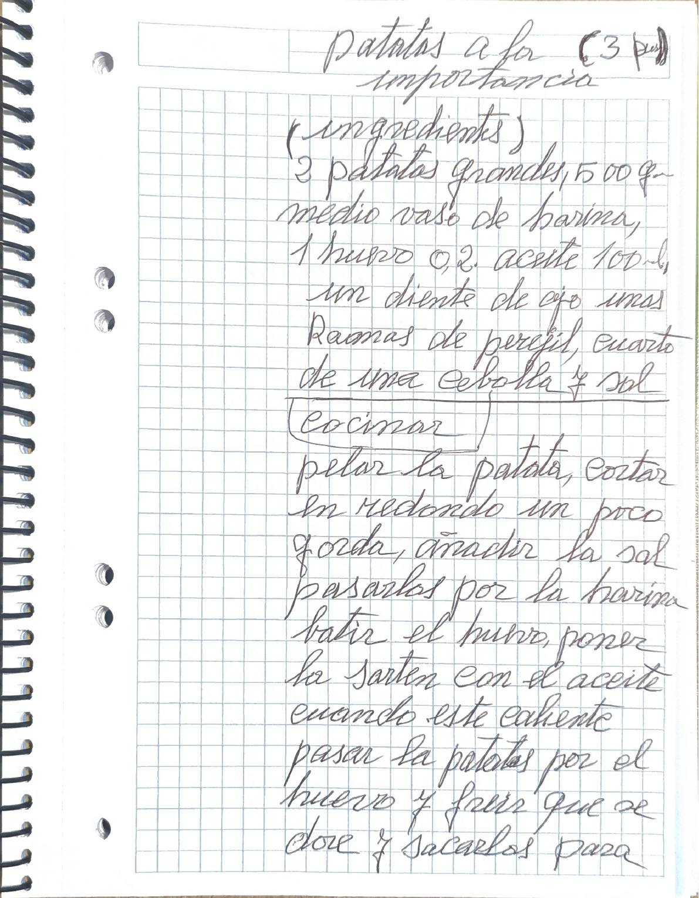
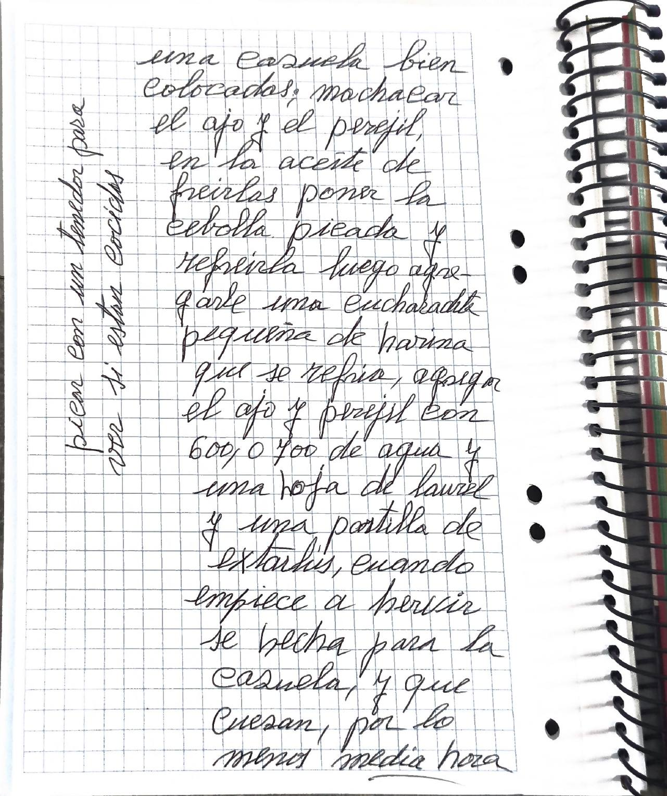
Transcripción fiel, con su ortografía. Lo que va entre corchetes son aclaraciones de la transcripción.
patatas a la importancia (3 per.)
(ingredientes)
2 patatas grandes, 500 gr. medio vaso de harina, 1 huevo o 2. aceite 100 ml, un diente de ajo unas Ramas de perejil, cuarto de una cebolla y sal
(cocinar)
pelar la patata, cortar en redondo un poco gorda, añadir la sal pasarlas por la harina batir el huevo, poner la sarten con el aceite cuando este caliente pasar la patatas por el huevo y freir que se dore y sacarlos para una cazuela bien colocados; machacar el ajo y el perejil, en la aceite de freirlas poner la cebolla picada y refreirla luego agregarle una cucharadita pequeña de harina que se refria, agregar el ajo y perejil con 600, o 700 de agua y una hoja de laurel y una pastilla de extarlus, cuando empiece a hervir se hecha para la cazuela, y que cuezan, por lo menos media hora
Pincharlas con un tenedor para ver si estan cocidos
En la cocina
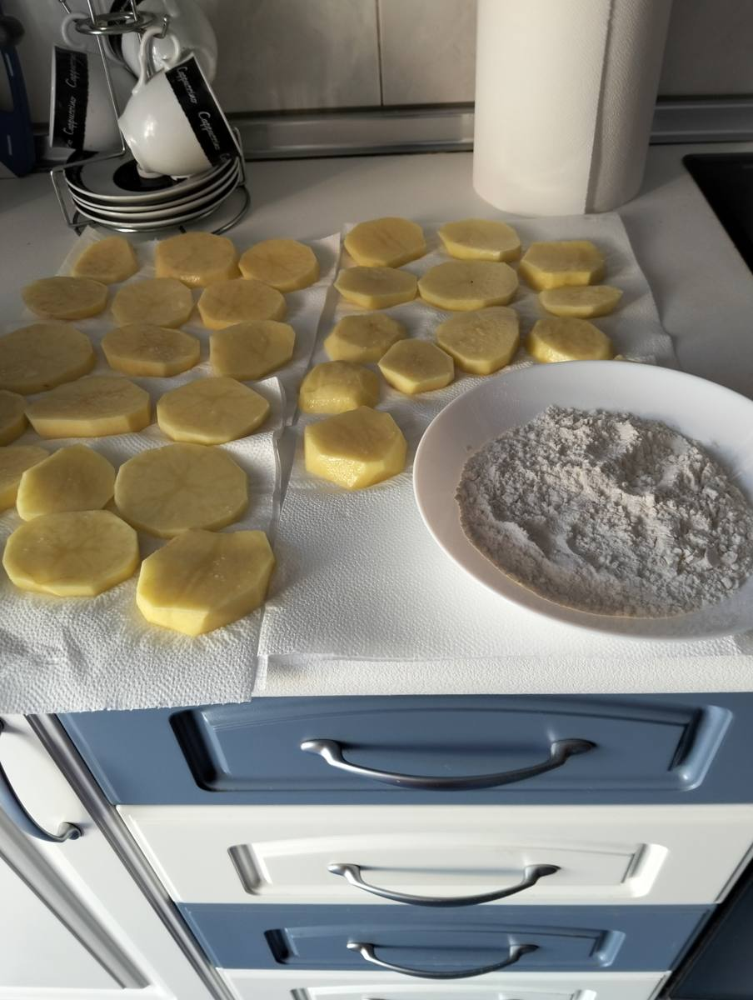
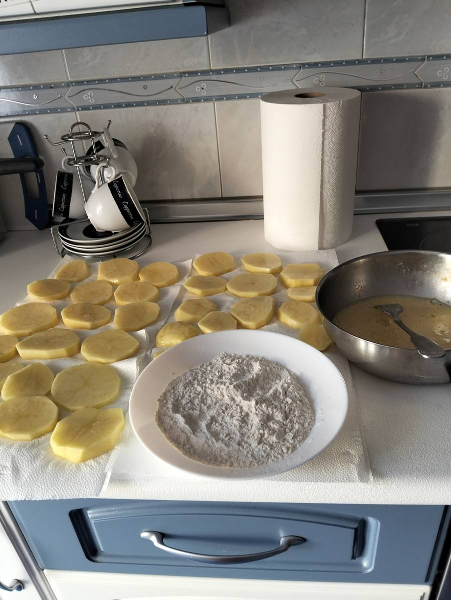
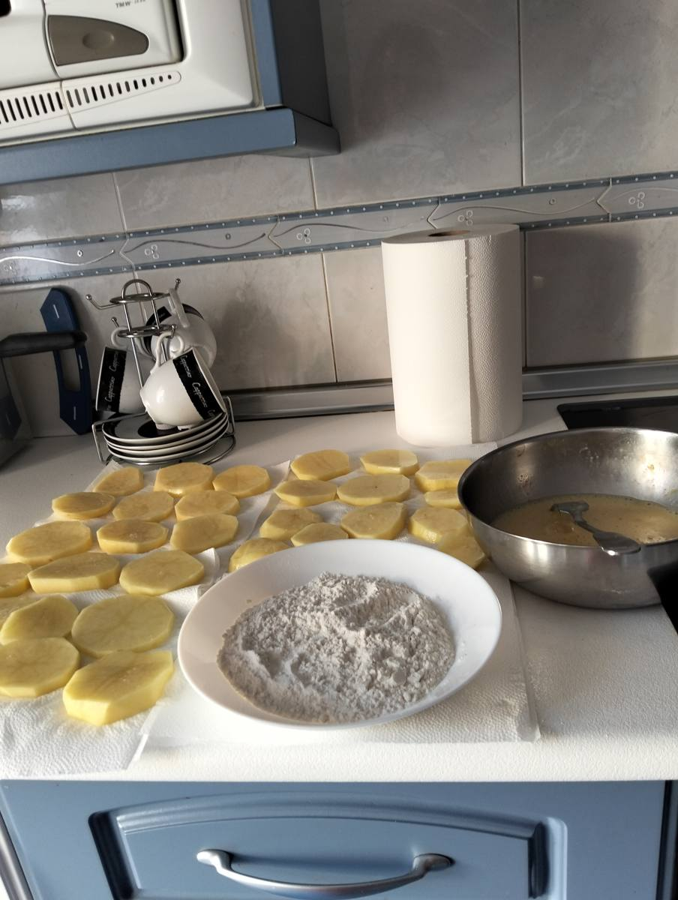
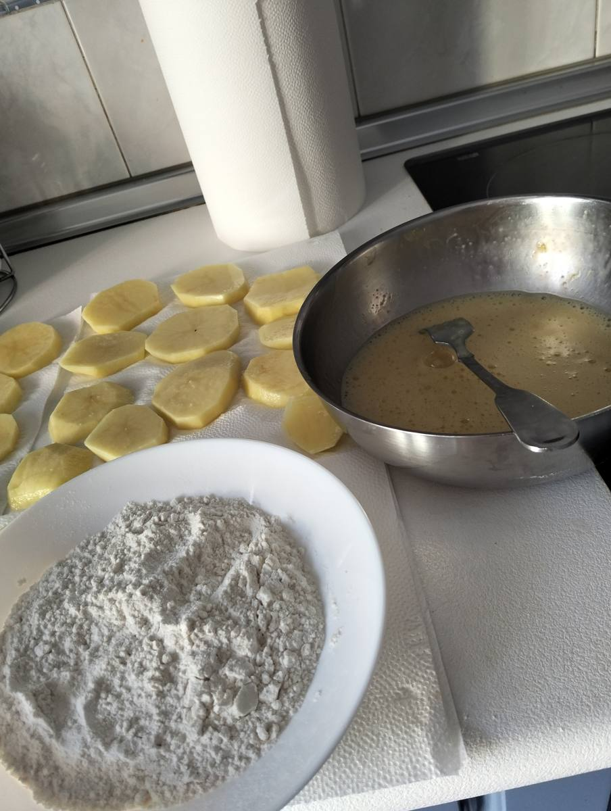
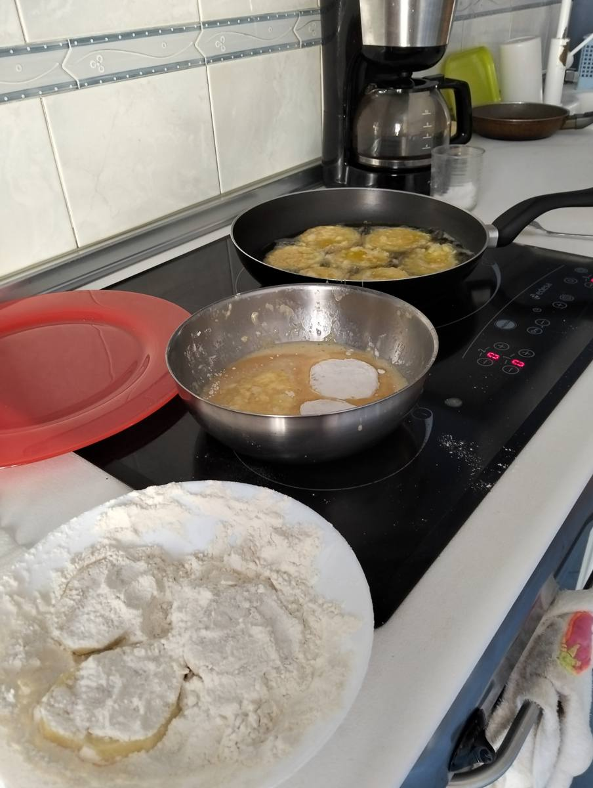
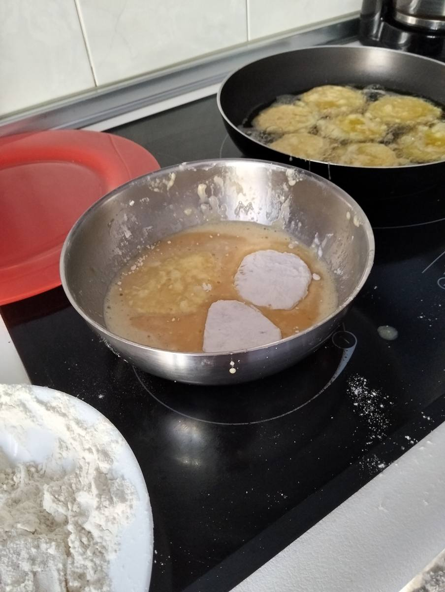
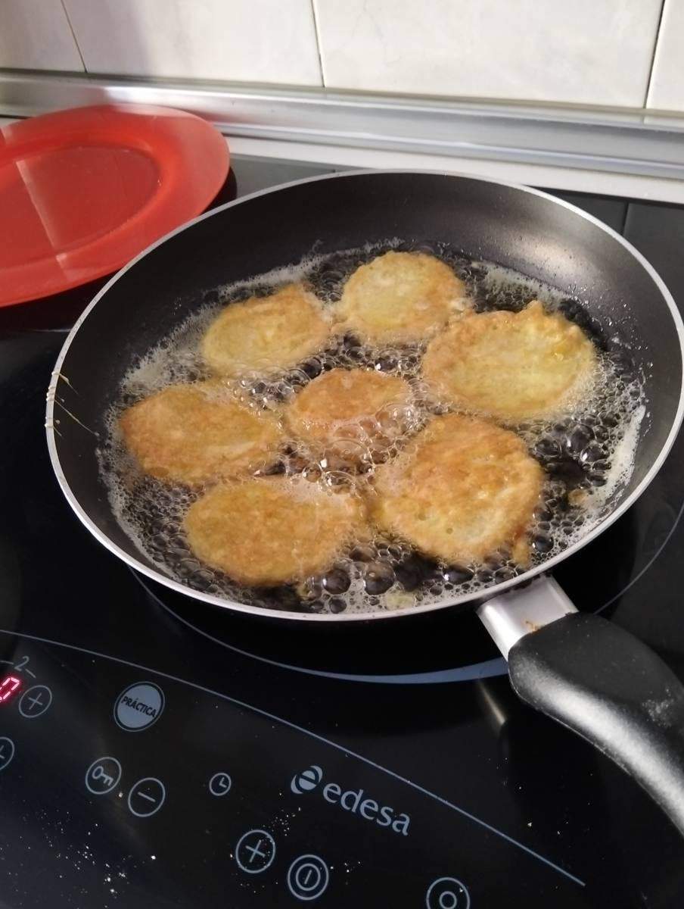
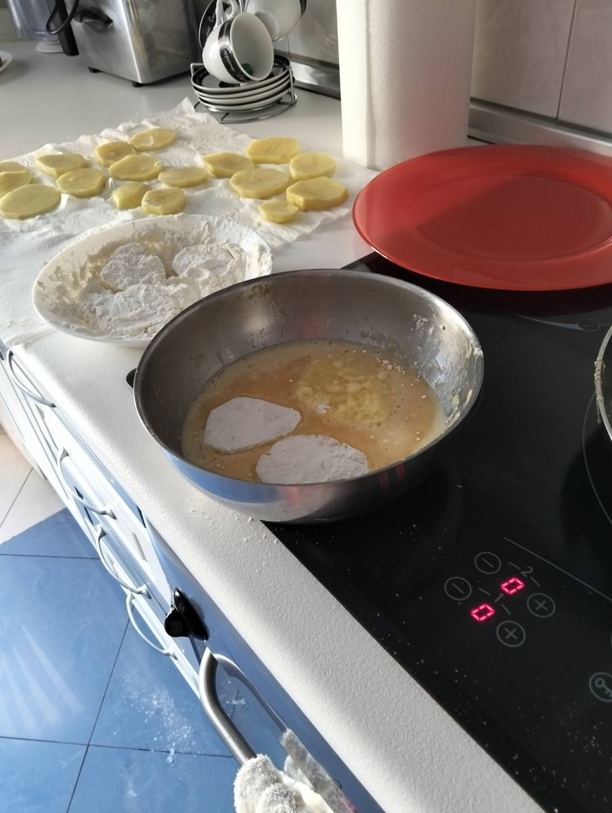
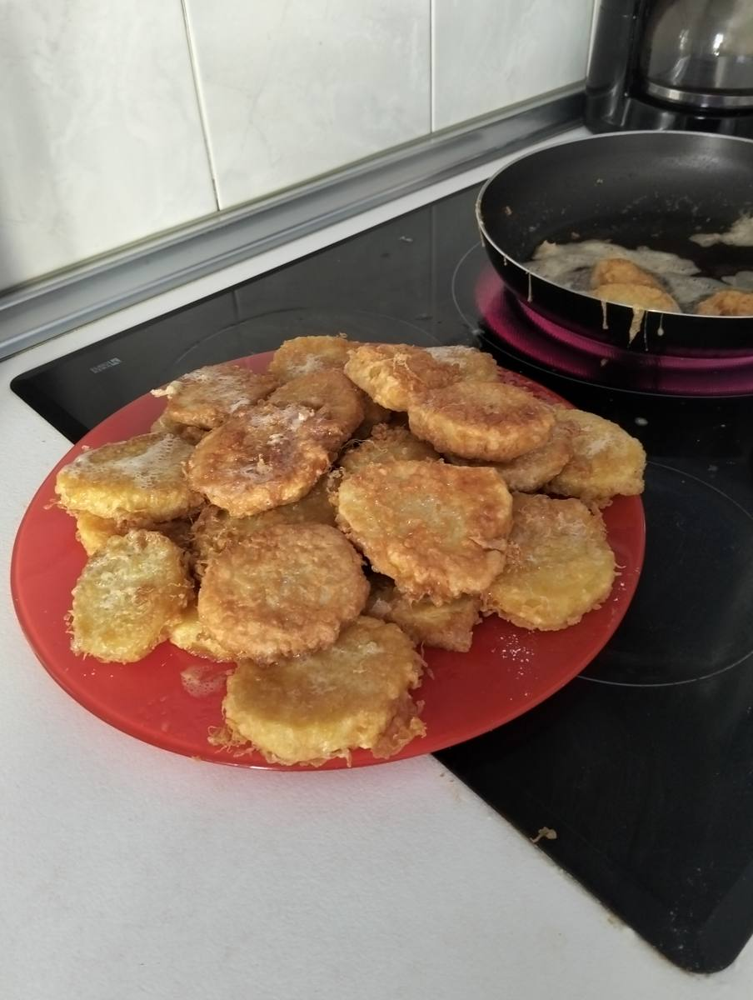
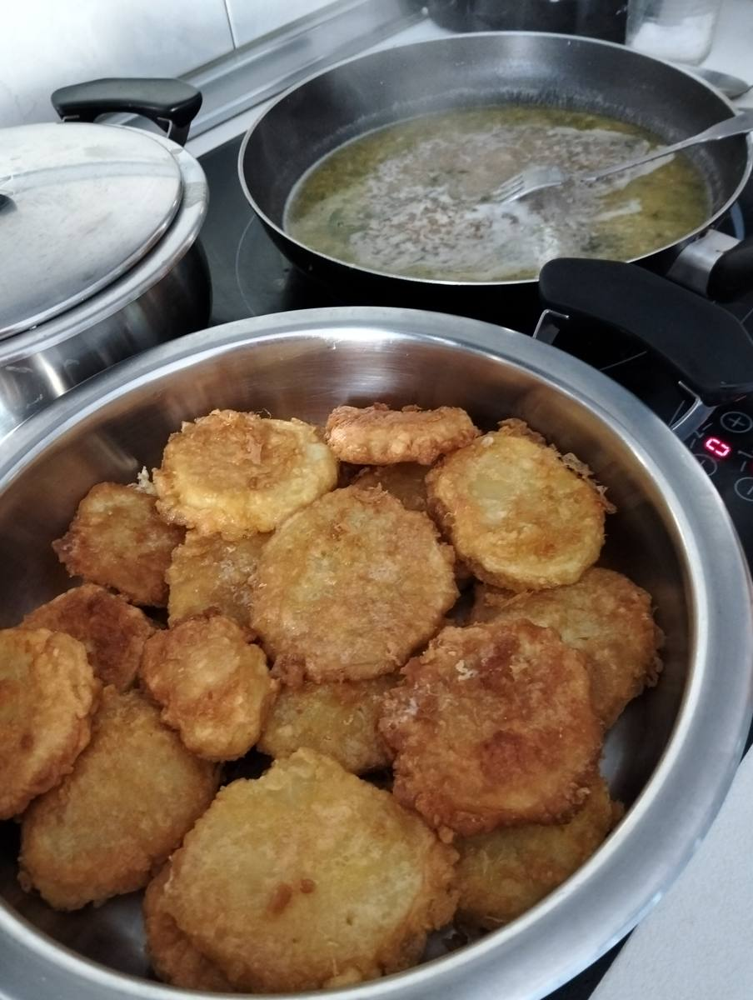
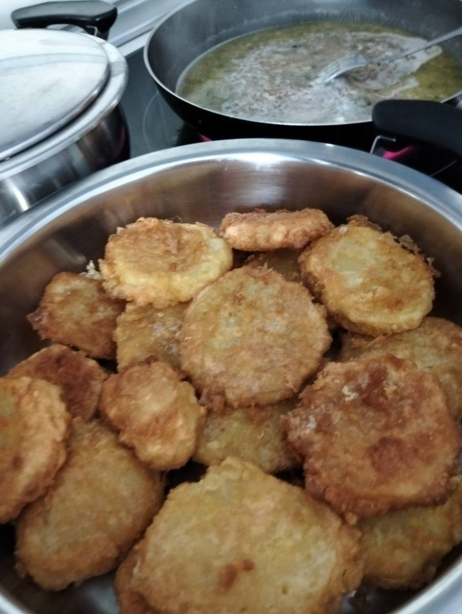